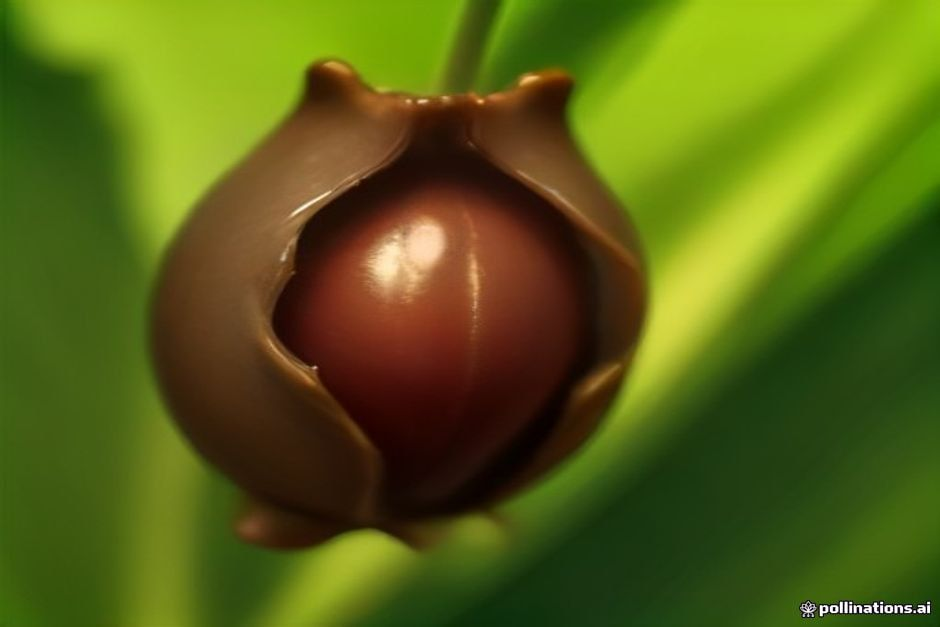

A Festa da Castanha 2026 no Curral das Freiras acontece no sábado, 31 de outubro, e no domingo, 1 de novembro. Quem vai da costa tem de subir ao vale, e vale a pena saber já como se chega, o que se come e a que horas convém lá estar.
Festa da Castanha 2026: datas e o que já se sabe
A festa do Curral das Freiras decorre este ano no fim de semana de 31 de outubro e 1 de novembro, no concelho de Câmara de Lobos. É a 38.ª edição. Cai logo a seguir à apanha, quando as castanheiras das encostas largaram a colheita, e fica colada ao Dia de Todos os Santos, em que a castanha é tradicionalmente protagonista.
Uma nota honesta: as horas das tasquinhas e a saída do cortejo costumam ser confirmadas pouco antes. Se precisa de uma hora certa, veja a agenda municipal de Câmara de Lobos ou o calendário cultural da Madeira nos dias anteriores. Esta página só dá como certas as datas.
Festival da castanha ou festa de aldeia?
Quem procura "festival da castanha" ou "feira da castanha" encontra a mesma coisa: uma festa de aldeia, não um festival com palco e cartaz. A organização é da comunidade e da câmara municipal, e o público é sobretudo madeirense, gente que sobe da costa propositadamente neste fim de semana.
O ponto alto é o Cortejo Alegórico, com mais de 350 figurantes caracterizados e carros alegóricos que desfilam pelas ruas estreitas a celebrar a colheita. À volta do cortejo, o recinto e as ruas enchem-se de dezenas de tasquinhas de produtores de castanha e de noz, com folclore e música ao vivo ao longo do fim de semana.
O que comer: do assador ao licor
Comece pela castanha assada, vendida quente na frigideira. Depois procure o que o vale faz bem:
- Licor de castanha, doce e para beber devagar.
- Bolo de castanha, denso.
- Sopa de castanha, boa para um dia de montanha.
- Mel e nozes dos produtores locais, para levar para casa.
- Poncha, que não falta em nenhum convívio ao ar livre da ilha.
Os preços são fixados por cada tasquinha e não há tabela comum. Faz-se tudo em pequenas quantidades, por isso o melhor é chegar cedo: a comida está mais fresca.

Entrada gratuita, estacionamento à parte
Entrar no recinto não custa nada. Paga-se o que se consome e o estacionamento, onde o houver.
Como ir do Funchal ao Curral das Freiras
O Curral das Freiras fica no interior, num vale de origem vulcânica rodeado de alguns dos picos mais altos da Madeira. De carro, são cerca de 20 a 25 minutos desde o Funchal pela ER107, que passa por um túnel na montanha antes de descer à aldeia. Por mar não se chega: é a parte da ilha em que realmente precisa de carro, táxi ou excursão.
Antes do túnel, pare no miradouro da Eira do Serrado. A vista de cima para o vale é a melhor apresentação possível, e convém vê-la antes de descer. Em fim de semana de festa o trânsito para o vale aumenta ao longo do dia, por isso conte com folga no regresso.
Quando ir
- De manhã: menos gente e tasquinhas com tudo em stock.
- De tarde: mais ambiente de festa, mas também mais trânsito.
- Sábado ou domingo: a festa dura os dois dias, escolha o que lhe der mais jeito.
Um dia de mar e montanha: barco de manhã, vale à tarde
A costa sul e o vale do Curral das Freiras são dois mundos, e cabem num só dia. Se está na ilha, pode fazer de manhã o passeio de dia da Chifbay, com partida às 10:00 da Marina do Funchal, cais C, e subir ao vale depois do almoço. O passeio passa por Câmara de Lobos e Cabo Girão e inclui banho e pranchas de paddle na Fajã dos Padres.
São 2 h 30 até à Ribeira Brava, por 500 €, ou 3 h até à Ponta do Sol, por 600 €. O preço é para o barco inteiro, até 5 pessoas, e a bordo há comida e bebidas, vídeo 360° Insta360, imagens de drone (se o tempo deixar) e fotografias com máquina a sério. O cancelamento é gratuito até 24 horas antes.
O passeio ao pôr do sol sai demasiado tarde para combinar com a festa, mas serve para o outro dia. Veja mais opções em passeios de barco na Madeira e tire dúvidas de horários e ponto de encontro em informações práticas.
A costa dá-lhe o mar. A Festa da Castanha dá-lhe o único fim de semana do ano em que o Curral das Freiras deixa de estar sossegado.
Porque vale a pena subir
Não é um grande evento e não pretende ser. São castanhas quentes, um cortejo que quase ninguém fora da Madeira conhece e um vale que passa o resto do ano em silêncio. É isso que a torna especial.